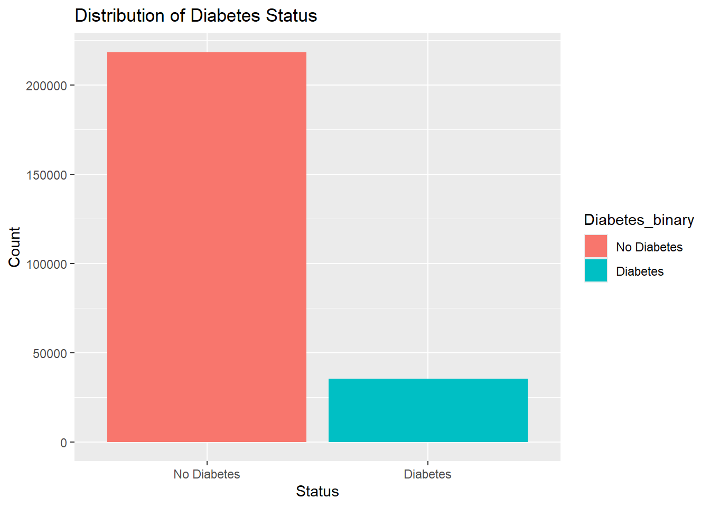
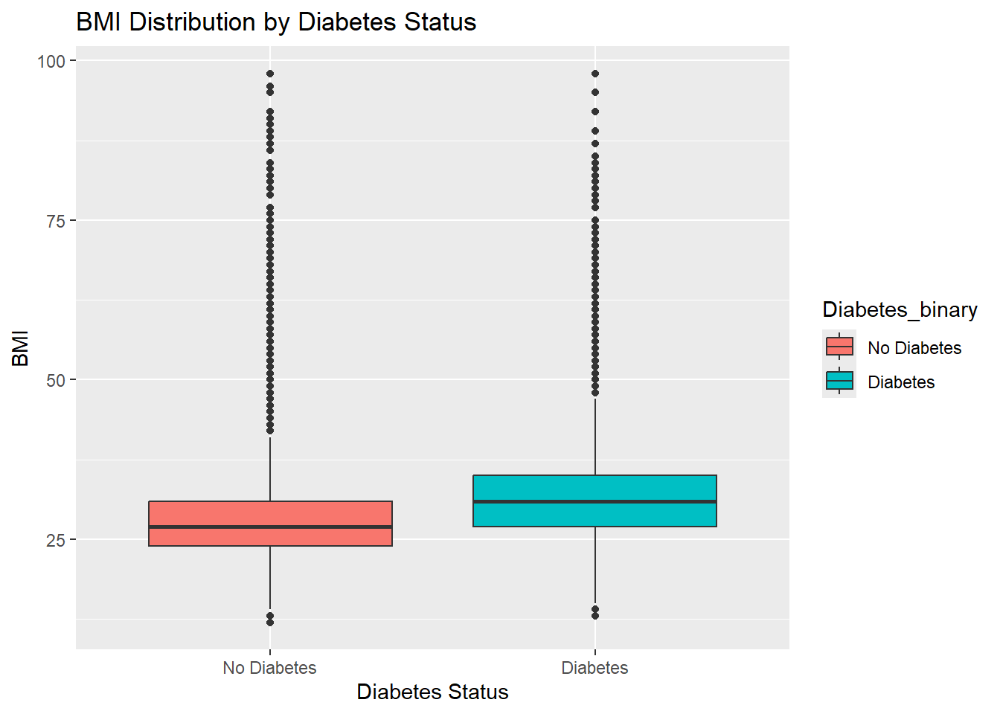
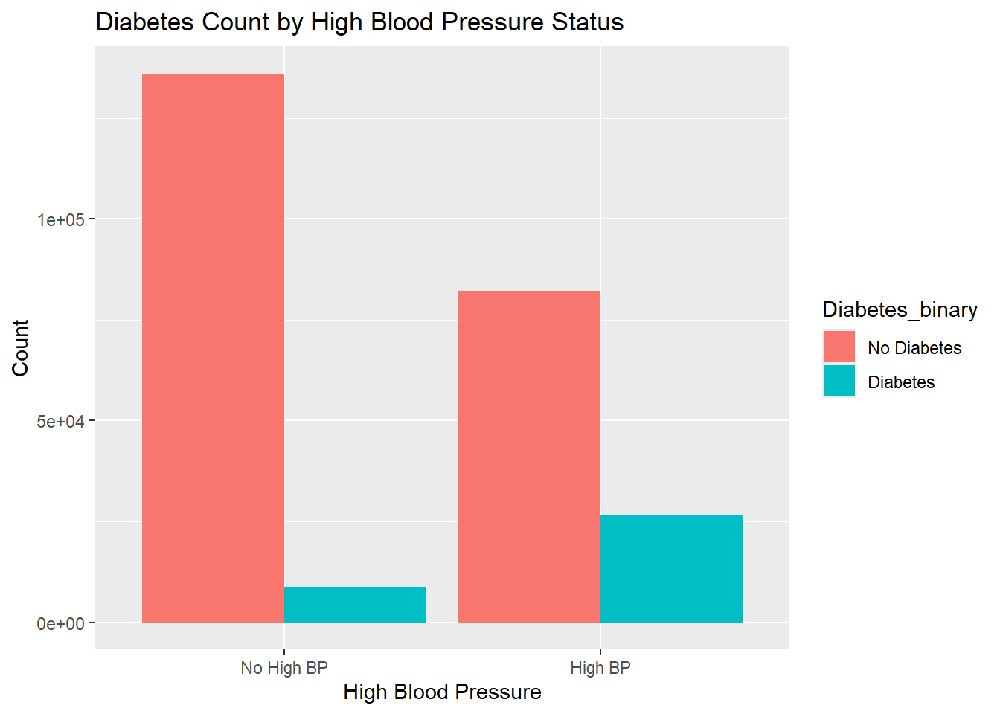
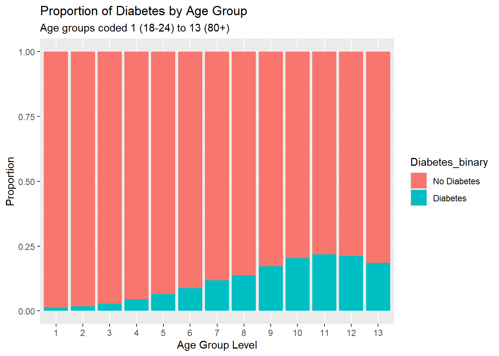

In this project, we analyze the Diabetes Health Indicators Dataset, which is derived from the BRFSS 2015 data. This dataset includes health-related responses from individuals, focusing on chronic conditions and lifestyle factors.
1.1. Data and Variables
The dataset contains 21 variables and 253,680 observations.
We will focus our investigation on specific variables that are likely to be strong predictors of diabetes. The key variables in our analysis include:
Diabetes_binary (Response): The target variable indicating the presence of diabetes (0 = No Diabetes, 1 = Diabetes or Prediabetes).
BMI: Body Mass Index, a key indicator of obesity.
HighBP: Whether the individual has high blood pressure.
Age: 13-level age category (ranging from 18-24 up to 80+).
GenHlth: Self-reported general health on a scale of 1 (Excellent) to 5 (Poor).
1.2. Purpose and Goal
The purpose of this Exploratory Data Analysis (EDA) : examine the distributions of these variables and investigate the relationships between the health indicators and the diabetes status. By visualizing these associations, we aim to verify which factors are most strongly correlated with diabetes.
The ultimate goal of this project : use these insights to build and compare predictive models—specifically a Classification Tree and a Random Forest—to accurately classify whether an individual has diabetes based on their health profile.
2. Reading Data
library(tidyverse)
── Attaching core tidyverse packages ──────────────────────── tidyverse 2.0.0 ──
✔ dplyr 1.1.4 ✔ readr 2.1.5
✔ forcats 1.0.1 ✔ stringr 1.5.2
✔ ggplot2 4.0.0 ✔ tibble 3.3.0
✔ lubridate 1.9.4 ✔ tidyr 1.3.1
✔ purrr 1.1.0
── Conflicts ────────────────────────────────────────── tidyverse_conflicts() ──
✖ dplyr::filter() masks stats::filter()
✖ dplyr::lag() masks stats::lag()
ℹ Use the conflicted package (<http://conflicted.r-lib.org/>) to force all conflicts to become errors
# Read the data (assuming the file is in the root directory)diabetes <-read_csv("diabetes_binary_health_indicators_BRFSS2015.csv")
Rows: 253680 Columns: 22
── Column specification ────────────────────────────────────────────────────────
Delimiter: ","
dbl (22): Diabetes_binary, HighBP, HighChol, CholCheck, BMI, Smoker, Stroke,...
ℹ Use `spec()` to retrieve the full column specification for this data.
ℹ Specify the column types or set `show_col_types = FALSE` to quiet this message.
BMI Differences: The grouped summary table explicitly highlights a relationship between BMI and Diabetes. The mean BMI for the “Diabetes” group (approx. 31.9) is noticeably higher than the “No Diabetes” group (approx. 27.8). This suggests that BMI is likely a strong predictor.
3. Exploratory Data Analysis (EDA)
3.1. The Response Variable: Diabetes Status
ggplot(diabetes_clean, aes(x = Diabetes_binary, fill = Diabetes_binary)) +geom_bar() +labs(title ="Distribution of Diabetes Status", x ="Status", y ="Count")

This bar chart visually confirms the class imbalance identified in the summary statistics. The number of healthy individuals vastly outnumbers those with diabetes.
3.2. Diabetes vs. BMI
ggplot(diabetes_clean, aes(x = Diabetes_binary, y = BMI, fill = Diabetes_binary)) +geom_boxplot() +labs(title ="BMI Distribution by Diabetes Status", x ="Diabetes Status", y ="BMI")

The boxplot illustrates a clear positive correlation between BMI and diabetes. The median BMI for the “Diabetes” group is visibly higher than that of the “No Diabetes” group. Furthermore, the entire interquartile range (the box) is shifted upwards for the diabetes group. This strongly suggests that as BMI increases, the likelihood of having diabetes also increases.
3.3. Diabetes vs. High Blood Pressure
ggplot(diabetes_clean, aes(x = HighBP, fill = Diabetes_binary)) +geom_bar(position ="dodge") +labs(title ="Diabetes Count by High Blood Pressure Status", x ="High Blood Pressure", y ="Count")

This plot illustrates a clear positive correlation between BMI and High Blood Pressure. In the “No High BP” group, the proportion of people with diabetes is very small. However, in the “High BP” group, the count of people with diabetes is significant. This indicates that High Blood Pressure is a significant risk factor for diabetes.
3.4. Diabetes vs. Age
ggplot(diabetes_clean, aes(x = Age, fill = Diabetes_binary)) +geom_bar(position ="fill") +labs(title ="Proportion of Diabetes by Age Group", subtitle ="Age groups coded 1 (18-24) to 13 (80+)",x ="Age Group Level", y ="Proportion")

The stacked bar chart shows a clear linear trend: as age increases (moving from group 1 to group 13), the proportion of individuals with diabetes (the blue section) steadily increases. The risk appears to peak around age groups 10 through 12. This suggests that age is a significant factor in diabetes prevalence, with older individuals being at a higher risk.
3.5. BMI by Diabetes Status Faceted by General Health
ggplot(diabetes_clean, aes(x = BMI, fill = Diabetes_binary)) +geom_histogram(binwidth =1, alpha =0.5, position ="identity") +facet_wrap(~ GenHlth) +labs(title ="BMI Distribution by Diabetes Status across General Health Ratings",x ="BMI",y ="Count") +theme(legend.position ="bottom")
This faceted plot allows us to see if the BMI-Diabetes relationship holds true regardless of self-reported general health.
Across almost all health ratings (from “Excellent” to “Poor”), the distribution of BMI for the Diabetes group (blue) is shifted to the right compared to the No Diabetes group (red).
It also shows that the “Poor” and “Fair” health categories have a larger overlap of diabetes cases compared to the “Excellent” category, suggesting that poor general health is strongly linked to both higher BMI and diabetes.
4. Conclusion
Our EDA confirms that variables such as BMI, General Health, High Blood Pressure, and Age show strong associations with Diabetes. These will be excellent candidates for predictors in our machine learning models.
We will now proceed to split this data and train Classification Tree and Random Forest models to predict diabetes status.